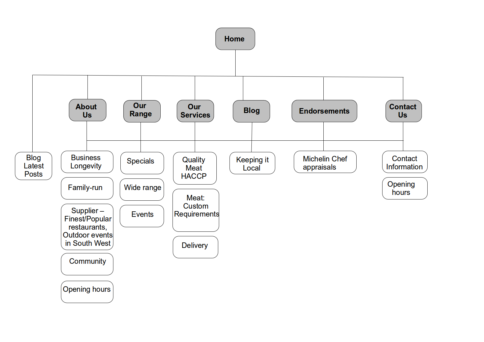

New WJ Harris Caterer's website
The Brief
A new website design to emphasise the products for sale from this family-run business, the longevity of this business (a business that's been running for over 15 years) supplying high quality meat to Bristol's/surrounding regions finest and most popular restaurants, as well as supplying meat to large-scale outdoor shows and festivals in the South-West. The company wanted to widen their customer base to local people drawing them in from the high street.
The User Journey

Click on the above user journey square to view the user journey drawing
Outcome
New Information Architecture (IA)
A new website design following relevant ISO guidelines, UX best practice, including Nielsen's usability heuristics, and from talking to and observing potential customers found at meat suppliers in the city/local area as well as their own customers.
A website design that exceedes the client brief via:
- a Blog highlighting the client's local and personal business approach
- a design emphasising their fine meat products via the IA focus on the range, services and endorsements
- designing the Information Architecture (IA) from card sorting user research into the main areas 'About us', 'Our range', 'Our services', 'Blog', 'Endorsements', 'Contact us' and sub-menu areas listed in the IA diagram below
 IAThe Challenge
- Trade market catering is highly competitive - client not wishing their current customers to be named
- To integrate a blog feature in the website design
- A Responsive design, to take account of mobile and tablet usage
Outline of my work
I designed a new Information Architecture (IA) to:- Highlight the company vision/ethos of serving the local community
- Highlight the products for sale in a usable and engaging manner
- Emphasis on the business being reputable
Website design included:
- Research involved talking to potential customers as users of the new website to ascertain the design goals, making sure the navigation was usable, easy to understand, accessible and organised in an understandable way.
- Website page 'mockups' for the functional specifications
- Reviewed competitor websites, and further to this I incorporated an emphasis on the quality and safety of the meat products, and the family-run business aspects in the Information Architecture (IA) website design
 About us
About us
 Our range
Our range
 Our services
Our services
 Endorsements
Endorsements
 Blog
Blog
 Contact us
Contact us